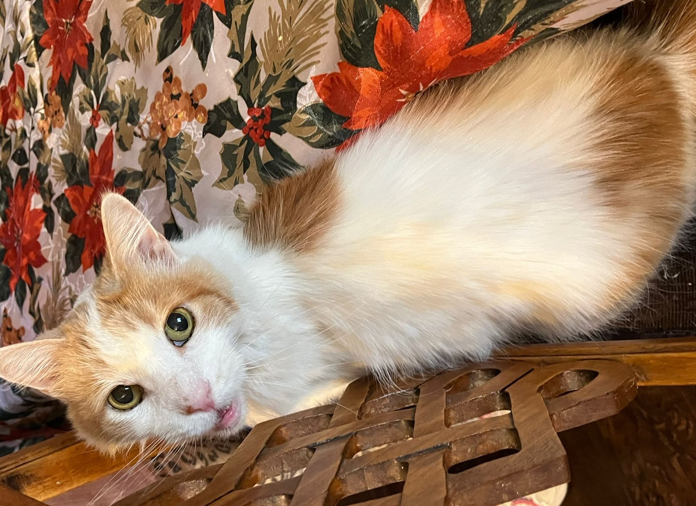

Datos principales
Lugar donde vive
Palmilla 5404
Día en que se perdió
18 de Abril
Horario aproximado
16:00
Último lugar donde se le vio
Techo de Palmilla 5431
Cómo reconocerla
Nombre
Cuchita
Edad
13 años
Color y pelaje
Mayormente blanca con manchas naranjas, muy peluda
Contextura
Delgada
Importante
Es un gato de casa, es primera vez que sale y pasa la noche afuera. Puede estar muy
asustada. Si la ves, intenta no perseguirla y comunícate de inmediato.
Galería de fotos

Puedes agregar más imágenes copiando otro bloque .gallery-item dentro de esta misma galería.
Ubicación en Google Maps
Este mapa corresponde al último lugar donde fue vista Cuchita (techo de Palmilla 5431). También puedes abrirlo directamente aquí: https://maps.app.goo.gl/6hD2xqXmNdBFnfBe6
Qué hacer si la ves
No la persigas bruscamente. Intenta mantenerla a la vista, toma una foto si puedes y llama o escribe de
inmediato al +56 9 6627 5130.